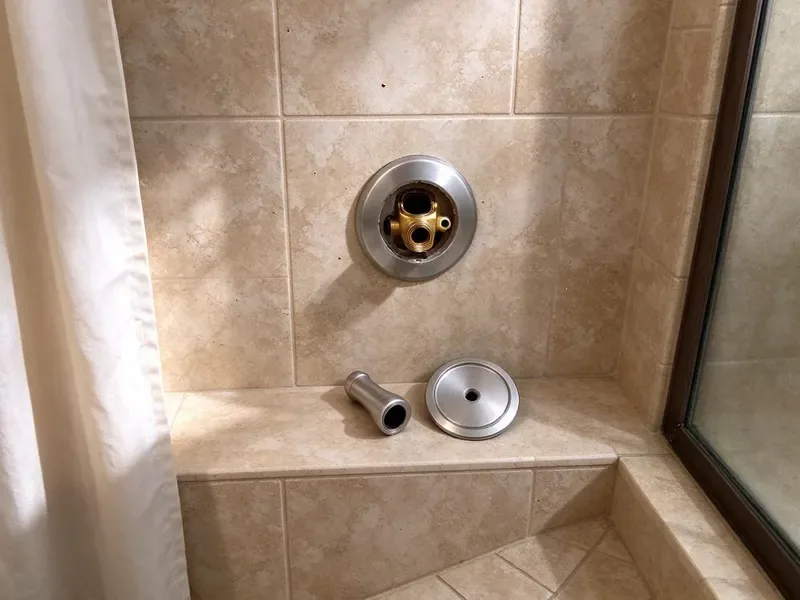

Toilet Replacement in Albany, GA
When repairs stop making sense, HGR Plumbing sets a new toilet in Albany, GA on a fresh seal with new bolts.
- Water-Saving Models
- Floors Protected
- Workmanship Guarantee
- No Hidden Fees

Swap Your Old Toilet in Albany, GA
The old toilet goes with us, along with the boxes.
Toilet Replacement in Albany, GA Done in One Visit
HGR Plumbing replaces toilets across Albany, GA that are cracked, running nonstop or simply worn out after decades of use and too many repairs. The old toilet comes out and the new one goes down on a fresh seal, usually in about two hours. Haul-away is included. You get a flat price before we start.
Work we handle every week:
- Supply and drain connections that meet code
- Flange inspection and replacement on every swap
- Residential and commercial toilet replacement

Additional Bathroom Plumbing Services in Albany, GA
From toilets to showers, our bathroom plumbing team in Albany, GA handles repairs, installs, and upgrades with tidy, code-compliant work.


Customers
Why Choose HGR Plumbing for Toilet Replacement in Albany, GA?
Pricing is flat and covers the toilet, wax ring, bolts, supply line, labor and disposal, with any flange or subfloor repair quoted separately before we do it. No surprises at the end. The number you approve is the number you pay.
- Hidden Issue Check, We inspect the flange and subfloor before the new toilet goes down.
- Honest Advice, We recommend models by flush performance, not markup.
- Licensed Plumbers, Our plumbers replace toilets every week, from wax rings to flange repairs.
Citywide Coverage
Rental properties and multi-unit buildings across Albany are part of our regular route, and we can replace several toilets in one visit to keep units turning. We coordinate entry with each tenant. You get photos and one invoice.
Experienced Team
Our team handles the heavy part, too, carrying one-piece toilets that can top 100 pounds up stairs and through tight doorways without scuffing walls. Those jobs get two plumbers. We protect the doorframes with padding.
Safety-First Approach
Permits are not usually needed for a like-for-like swap, but moving a drain or adding a toilet brings in the local code office and an inspection under Georgia plumbing rules. We tell you which applies. When one is required, we file it and schedule the inspection.
Trusted Certified Albany Plumbing Services Professionals
At HGR Plumbing, we are proud to offer certified plumbing services throughout Albany, GA. Those papers on the wall mean something. Our plumbers hold recognized industry credentials, and they follow strict safety and quality rules on every repair, installation and maintenance call we run.
Call Us Now PHCC Plumbing Contractor Recognition
PHCC Plumbing Contractor Recognition Better Business Bureau (BBB) Accreditation
Better Business Bureau (BBB) Accreditation Angi Certified Pro
Angi Certified Pro ISO 9001 Quality Management Certification
ISO 9001 Quality Management CertificationWhat a Toilet Replacement Covers in Albany, GA
One-Piece Toilet Replacement in Albany, GA
One-piece toilets have no tank-to-bowl joint, so there are fewer leak points and fewer crevices to clean. They cost more and weigh more. A one-piece toilet usually takes two people to carry upstairs, and we set it without dragging it across your tile so the floor stays unscratched and the wax ring lands centered on the flange.

Wall-Hung Toilet Replacement in Albany
Wall-hung toilets mount to a steel carrier inside the wall, so replacing one means checking the carrier bolts, the gasket on the outlet and the condition of the wall finish around it. Some carriers need new bolts. We match the new bowl to the existing carrier whenever possible, which avoids opening the wall.
Toilet Rough-In Adjustments in Albany, GA
Rough-in is the distance from the finished wall to the center of the drain, usually 12 inches, sometimes 10 or 14 in older homes. Take the measurement from the wall to the closet bolts, not from the baseboard trim. If the new toilet's rough-in does not match, it either sits too far out or will not fit. An offset flange can correct an inch or two without moving the drain.
Standard Toilet Replacement in Albany
Two-piece toilets are what most houses have, and after twenty or thirty years the tank bolts corrode, the porcelain gets crazed and the flush never quite clears the bowl. At that point a swap makes more sense than another repair. We pull the old toilet, scrape the flange and check it for cracks, then set the new one on a fresh wax ring with new closet bolts.
High-Efficiency Toilet Installation in Albany, GA
Toilets made before 1994 often use 3.5 gallons a flush, and some from the 1970s use five or more. Current WaterSense models are rated at 1.28 gallons per flush or less, and the better ones still clear the bowl in one try because the trapway and flush valve are larger than they used to be. Savings show up fast. Some water providers offer a rebate, so ask before you buy.
Water-Saving Toilet Upgrades in Albany, GA
Older toilets are one of the largest indoor water users in a house, and replacing a 3.5 gallon model with a 1.28 gallon one cuts toilet water use by more than half. Dual-flush toilets add a lighter flush for liquids. Our recommendations lean on high MaP scores so the savings do not come with double flushing.
Urgent Toilet Replacement in Albany, GA
Late-night failures happen, usually a tank that splits along a seam or a bowl that cracks at the base and keeps seeping no matter how many towels go down. Turn off the angle stop and the leak stops. A replacement can usually go in first thing the next morning, and we will tell you if the floor needs to dry before we set the new one.

Rental and Multi-Unit Toilet Replacement in Albany, GA
Landlords with several units do better standardizing on one toilet model with common parts, because the next flapper or fill valve is then the same part in every unit. Multiple toilets can be swapped in a single trip. Tenants keep a working bathroom. We coordinate entry directly with them, so you do not have to be there.
Nearby Toilet Replacement in Albany, GA
Calls get answered by a person who asks the questions that matter for a toilet swap, like the rough-in, the seat height, the bowl shape you want and whether there is a second bathroom. Those answers set the schedule. If it is your only toilet, we move faster.
Near-me searches turn up plenty of companies that subcontract the work, so you do not know who is coming until they knock. Our own plumbers do every job in Albany. They are licensed. They all work from the same price sheet and stock.
HGR Plumbing at a Glance
- Fully licensed plumbing team covering Albany, GA
- 24/7 emergency service with same-day scheduling
- Clear written estimates, no hidden fees
- 4.9-star rated by 357+ Georgia customers
Albany Map
Albany Information
- Population
- 66,877
- Area codes
- 229/478/912
- Service area
- Albany and towns within a 40 mile drive
- Nearby
- Valdosta, Columbus, Warner Robins, Macon
Swapping an old toilet in Albany, GA for a WaterSense model is one of the easiest ways to cut household water use and lower the monthly bill.
Talk to a Plumber
Call HGR Plumbing for honest, reliable plumbing from people who know the trade in Albany, GA.
Our Specialized Plumbing Services in Albany, GA
At HGR Plumbing, we handle the full list of plumbing services across Albany, GA. We go from leak detection all the way to full system installations, for homes and commercial buildings, and we do it quickly at a fair price. Take a look at our core services below:


Our Toilet Replacement Steps in Albany, GA
At HGR Plumbing, every toilet replacement follows the same steps so nothing gets skipped.
Get a Flat Price
Call (770) 470-3778 and tell us what you want in a new toilet. Removal and haul-away are in the price.
Remove and Inspect
We pull the old toilet and inspect the flange and subfloor. Any repair is priced before we continue.
Install and Haul Away
We set the new toilet level and test it with several flushes, then take the old one with us.
Frequently Asked Questions About Toilet Replacement in Albany
A standard toilet replacement usually runs $400 to $800 with the new toilet and labor included, depending mostly on the model you choose. Any flange or subfloor repair is extra. Those get their own price before any work, so the base number does not move.
Rough-in is the distance from the finished wall behind the toilet to the center of the drain, which you can find by measuring to the closet bolts. Twelve inches is standard. Some older houses have a 10 or 14 inch rough-in instead, and a toilet made for the wrong one either sticks out or will not fit.
TOTO, American Standard, Kohler and Gerber all make good toilets, and we steer people toward the models in each line with a 3 inch flush valve and a strong MaP score. Flush design matters more than the badge. We also weigh how easy the parts are to find.
Private wells still serve a sizable share of rural Georgia homes, and iron, sediment, and low pH can shorten the life of pumps, tanks, and copper lines. Hard water leaves calcium scale in the rim jets and on the flush valve seat, which slowly weakens the flush and makes flappers leak. A fully glazed trapway resists scale better. We recommend models with fully glazed trapways and simple fill valves.
Older toilets use 3.5 to 7 gallons per flush, and a WaterSense toilet uses 1.28 or less, so a household of four can save thousands of gallons a year. You will see it on the next water bill.
Most swaps take 1.5 to 2.5 hours. If the flange or subfloor needs work, add up to an hour.
Not for most straight swaps. Moving the toilet or reworking the drain usually needs a permit in Albany, GA, and the inspector may want to see the work before the floor is finished. You will know which case applies before we start.
Cracked porcelain is the clearest one, followed by clogs that come back every week, a base that rocks again after every reset, and a tank that uses 3.5 gallons or more. At that stage, more repairs are throwing good money after bad. If a fix is still reasonable, we tell you.
Hear From Customers Who Hired Our Plumbing Experts

Karen W.
After our third pinhole leak in copper, we stopped patching. HGR Plumbing gave us a written plan room by room and repiped the house in PEX while we stayed in it. The crew covered our floors every morning and cleaned up every night.
Repiping · Columbus, GA
Monica A.
Our water bill nearly doubled in one month with no change in how we used water. The tech checked the meter, heard the leak under the hallway with his equipment, and opened a hole about a foot square. Fixed the same day.
Slab Leak Repair · Valdosta, GADiane F.
My kitchen faucet had dripped for months and I finally got tired of hearing it at night. HGR Plumbing came out the next morning, replaced the cartridge and the O rings, and tightened a loose base that was letting water under the sink.
Faucet Repair · Columbus, GA
Greg S.
I manage a small strip center with six tenants. HGR Plumbing handles our annual backflow testing and fixed a recurring clog in the shared sewer line that had been backing into the nail salon. Their reports come in clean and on time.
Commercial Plumbing · Columbus, GAAngela D.
Our sump pump quit during a storm and the water was an inch from the basement carpet. HGR Plumbing put in a new pump with a battery backup that same evening. We have had two heavy rains since. It kicked on both times.
Sump Pump · Albany, GA
Robert G.
The camera showed a full break in our clay sewer line near the street. HGR Plumbing replaced it with a trenchless pipe burst, so the only digging was two small pits in the yard. They let us watch the footage before and after.
Sewer Line Replacement · Valdosta, GA